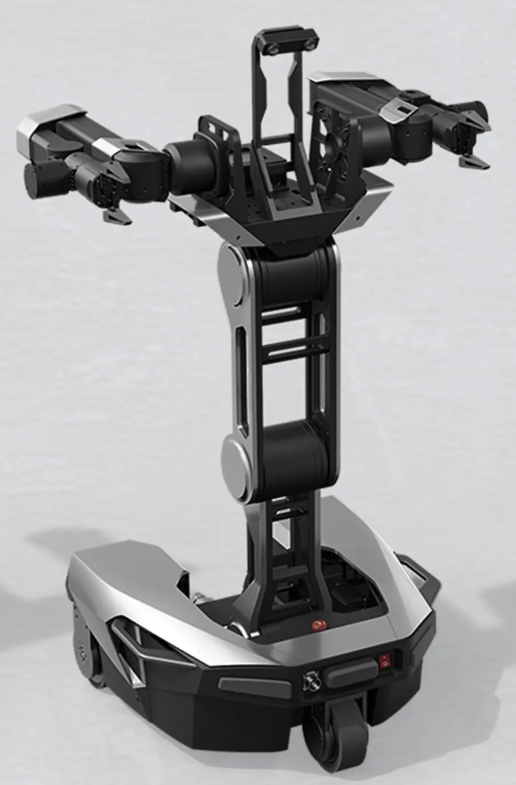
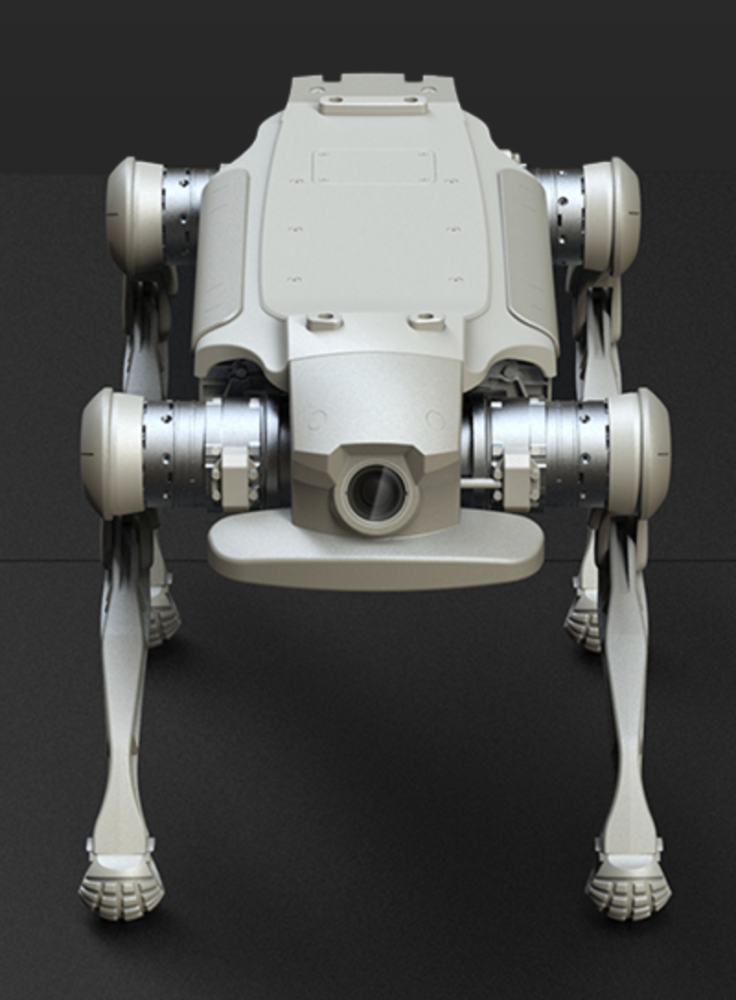

Catalog browsing
Visitors can browse packaged software, robot kits, and fleet products with clean category filtering.
About 1N Robotics
We are building navigation products that robotics teams can discover, evaluate, and buy with much less friction.
What We Believe
Many robotics teams do not want another vague sales process. They want to understand what a product does, what it costs, what robot it fits, and how quickly it can be deployed.
This site is built around that model: packaged offers, AI-generated product visuals, a working cart, and a simple online order flow.
Capabilities
Visitors can browse packaged software, robot kits, and fleet products with clean category filtering.
The storefront includes cart persistence, checkout totals, buyer form capture, and confirmation messaging.
All primary visuals used in the storefront are AI-generated concept images selected for a cohesive robotics style.



Browse robotics products, add them to cart, review totals, and place a simple order directly in checkout.
Yes. The store experience uses AI-style generated artwork and concept visuals across the site.
It supports simple online purchasing workflows for packaged products without requiring a separate backend system.